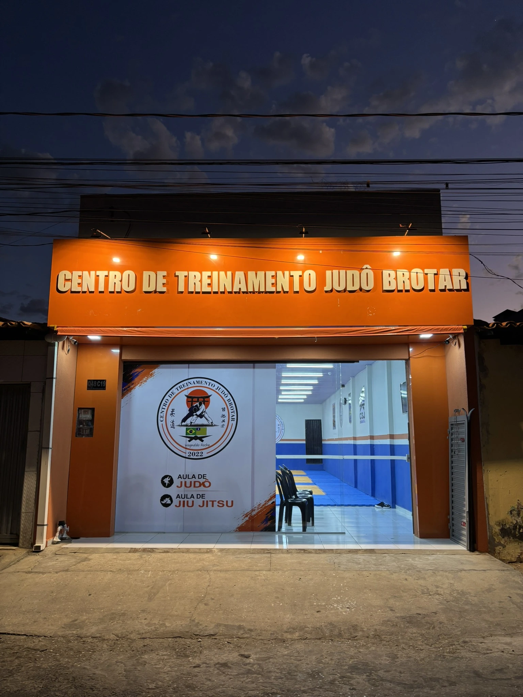
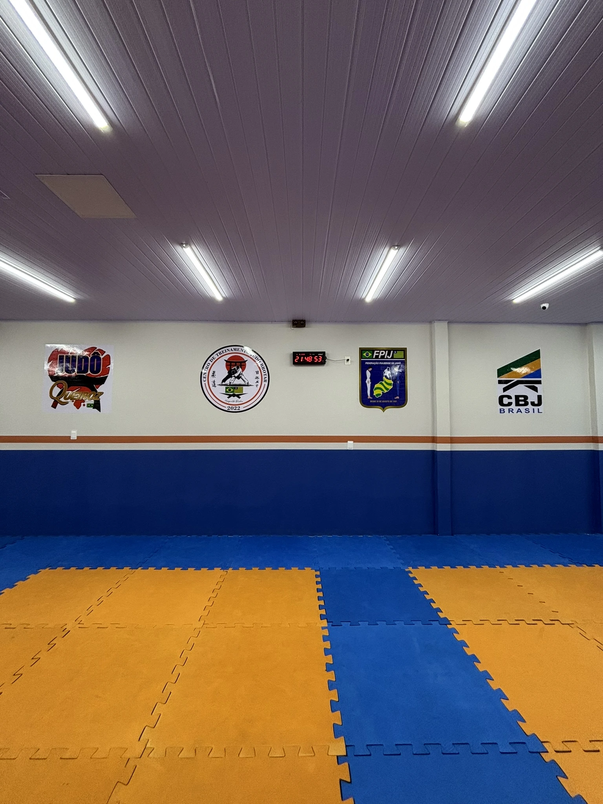
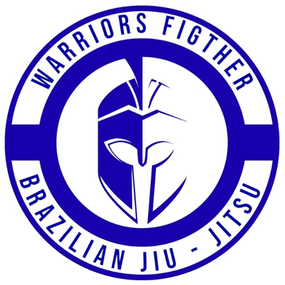

O tatame que ensina
respeito, disciplina
e evolução.
O CT Judô Brotar é um centro de treinamento dedicado ao Judô — com aulas de Jiu-Jitsu em parceria — para crianças, jovens e adultos que buscam desenvolver técnica, disciplina e valores que levam para a vida.
Um espaço construído
para o Judô.
O Centro de Treinamento Judô Brotar nasceu em 2022 com uma proposta clara: formar cidadãos. Criamos um espaço sério, estruturado e acolhedor, onde cada aluno encontra no esporte uma oportunidade de crescimento, disciplina e desenvolvimento.
Nossa modalidade principal é o Judô, arte marcial japonesa e esporte olímpico criado por Jigoro Kano. Mais do que uma modalidade de combate, o Judô desenvolve força, coordenação, equilíbrio, condicionamento físico, concentração e autoconfiança, sempre baseado em princípios como o Jita Kyoei (prosperidade mútua) e o Seiryoku Zenyo (máxima eficiência).
Além do Judô, o CT também recebe aulas de Jiu-Jitsu, em parceria, oferecendo uma formação complementar para quem deseja desenvolver suas habilidades de luta no solo. No tatame, formamos atletas; através do esporte, formamos pessoas.




Judô
O Judô é a modalidade principal do CT Judô Brotar, conduzida pela nossa própria equipe desde a fundação em 2022. Trabalhamos a arte marcial criada por Jigoro Kano ao lado dos valores que dão nome à arte: respeito, disciplina e superação, dentro e fora do tatame.
Segunda e Quarta
Terça e Quinta

Jiu-Jitsu
As aulas de Jiu-Jitsu acontecem no mesmo tatame do CT Judô Brotar, em parceria com a equipe Warriors Fighter Brazilian Jiu-Jitsu, para quem quer somar o jogo de solo à sua formação marcial.
Segunda e Quarta
Nosso contato oficial é o WhatsApp.
Dúvidas sobre matrícula, horários, mensalidade ou qualquer outro assunto — resolvemos tudo por lá. É o jeito mais rápido de falar com o CT.
Chamar no WhatsApp